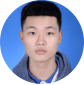
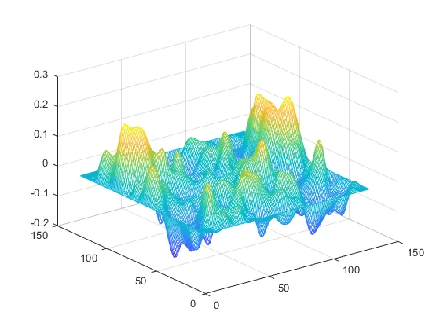

欧拓飞科技（珠海）有限公司
光学助理工程师 · 研发部光学组
参与 AR 画质检测设备 EVT 阶段工作，完成整机关键校准与数据整理；独立解决暗室漏光问题，编写校准 SOP 与工程表，参与 GRR 分析和 BOM 管理。

罗葵华广东工业大学 · 光学工程硕士在读你好，我是罗葵华。关注通感一体化、混沌激光雷达与光通信，积累了从波前算法、桌面软件到 AR 光学设备集成与现场交付的实践。

相位解包裹处理耗时优化
本科毕设闭环校正 RMS 误差降低
AR 检测设备整机关键标定
让算法跑起来，
也让系统交付出去。
从光学实验到软件与工程现场，
这里是我参与和完成的具体工作。
这个分类暂时没有作品。
我喜欢把问题拆开，
再把系统搭起来。
光学助理工程师 · 研发部光学组
参与 AR 画质检测设备 EVT 阶段工作，完成整机关键校准与数据整理；独立解决暗室漏光问题，编写校准 SOP 与工程表，参与 GRR 分析和 BOM 管理。
光学助理工程师 · 智能光学传感与控制
独立开发波前检测 GUI，将算法嵌入 ProLensApp，优化相位解包裹处理速度；参与实时采集集成、算法模块化、文档交接及新人带教。
关注混沌激光雷达与光通信一体化，记录文献阅读、原理梳理与实验思考。
周报专栏正在准备中。后续将在这里更新各期研究记录、图文报告与阅读笔记。
除了光学与算法，我也探索 AI 内容创作和工具工作流。喜欢骑行、摄影与户外，在不同的实践中寻找新的问题和表达方式。
光学工程 · 硕士在读
通感一体化 · 混沌激光雷达与光通信光电信息科学与工程 · 本科
本科毕设：波前探测与闭环校正全国大学生光电设计竞赛东南赛区三等奖
“华数杯”全国大学生数学建模竞赛三等奖
全国大学生数学建模竞赛广东省分赛三等奖
光学工程、算法开发、研究交流与 AI 工具探索。